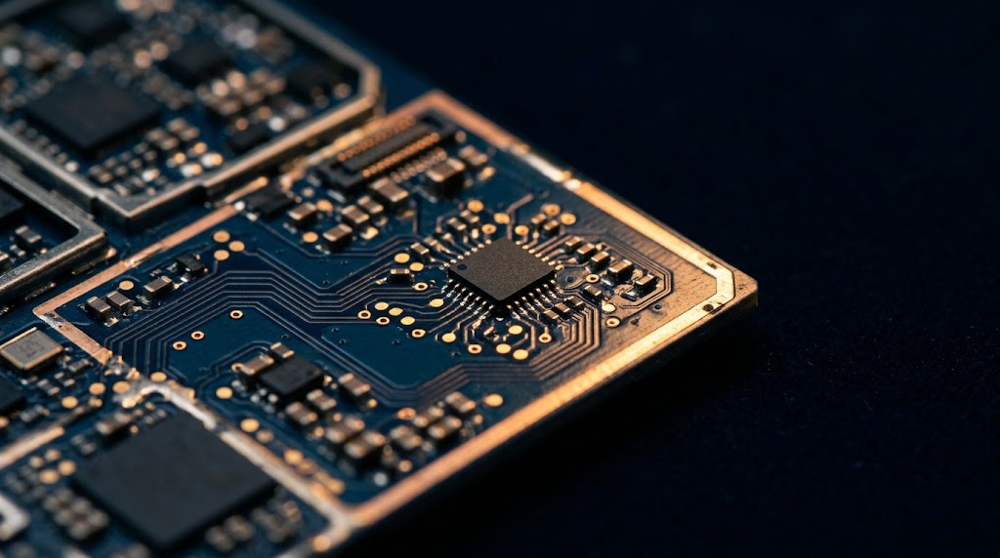

無線と IoT
BU1／第1事業部セルラーと近距離無線のモジュール、アンテナ、高速光インタフェース。産業 IoT、車載通信、エッジコンピューティングで、消費電力・認証・コストのバランスを取ります。
Telit
EverProX（旧 Silicon Line）
- 用途
- 産業 IoT、車載通信、エッジ、医療・遠隔機器
- 支援
- モジュール選定、アンテナ整合、認証書類、Linux／ドライバのデバッグ
- 購買の要点
- 地域の周波数帯とキャリア認証、長期供給の確約
- 案件の型
- デザインインとサンプル支援